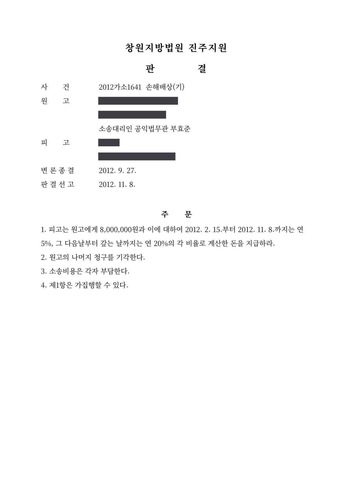

손해배상 청구소송
창원지방법원 진주지원 2012가소1641 · 피해자 대리 · 담당변호사 부효준
판결문

사건의 요지
1,300만 원의 손해배상을 구한 소액사건으로, 법원은 그중 800만 원과 지연손해금의 지급을 명하였습니다.
사건의 주요 내용
원고가 피고를 상대로 1,300만 원의 손해배상과 지연손해금을 구한 소액사건입니다. 2012년 9월 변론이 종결되어 같은 해 11월 판결이 선고되었고, 부효준 변호사가 법률구조 사건으로 원고를 대리하였습니다. 소액사건이어서 판결문에 이유가 적혀 있지 않아 손해의 구체적인 내용은 나타나 있지 않습니다.
법원의 판단
법원은 원고의 청구 가운데 800만 원과 이에 대한 2012년 2월부터의 지연손해금(판결 선고일까지 연 5%, 그 다음날부터 연 20%)을 인용하고 나머지 청구는 기각하였습니다. 소송비용은 각자 부담하고, 지급을 명한 부분은 가집행할 수 있도록 하였습니다.
이 사건이 보여 주는 것
청구액 1,300만 원 중 800만 원이 인정된 사건으로, 손해배상 사건에서는 손해액의 입증 정도와 책임 제한에 따라 인용 금액이 달라집니다. 일부만 인용되면 소송비용도 각자 부담 등으로 나뉘고, 인정되지 않은 부분에 대하여는 판결문을 받은 날부터 2주 안에 항소 여부를 정하여야 합니다.
비슷한 처분을 받으셨다면
행정처분은 처분이 있음을 안 날부터 90일 이내에 행정심판이나 취소소송으로 다투어야 하고, 기간이 지나면 돌이킬 수 없는 처분은 집행정지를 서둘러야 합니다. 처분서를 받은 날짜부터 확인해 드립니다.